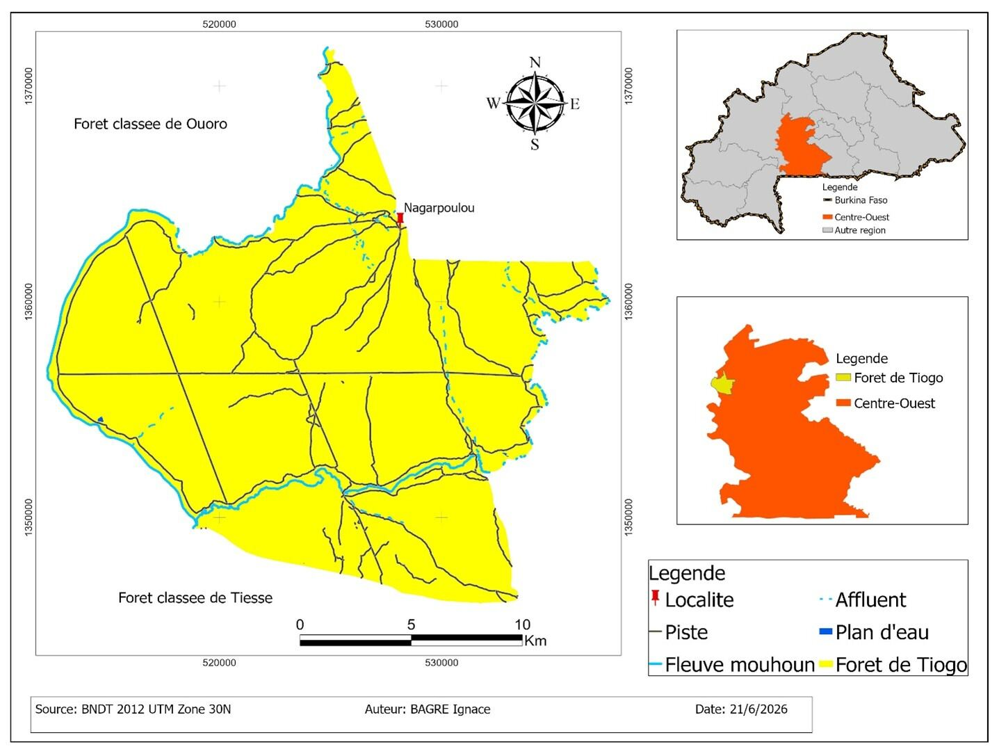
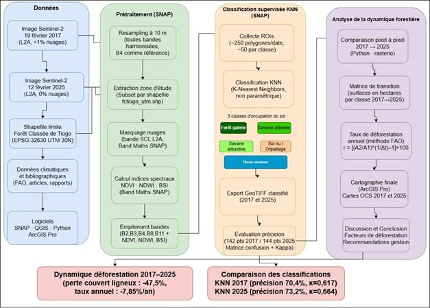
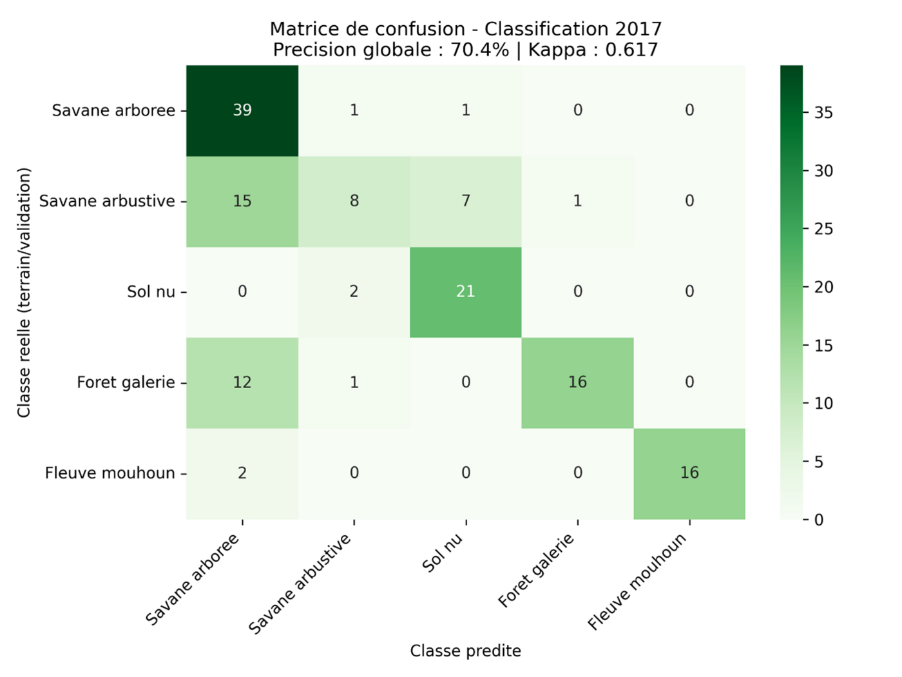
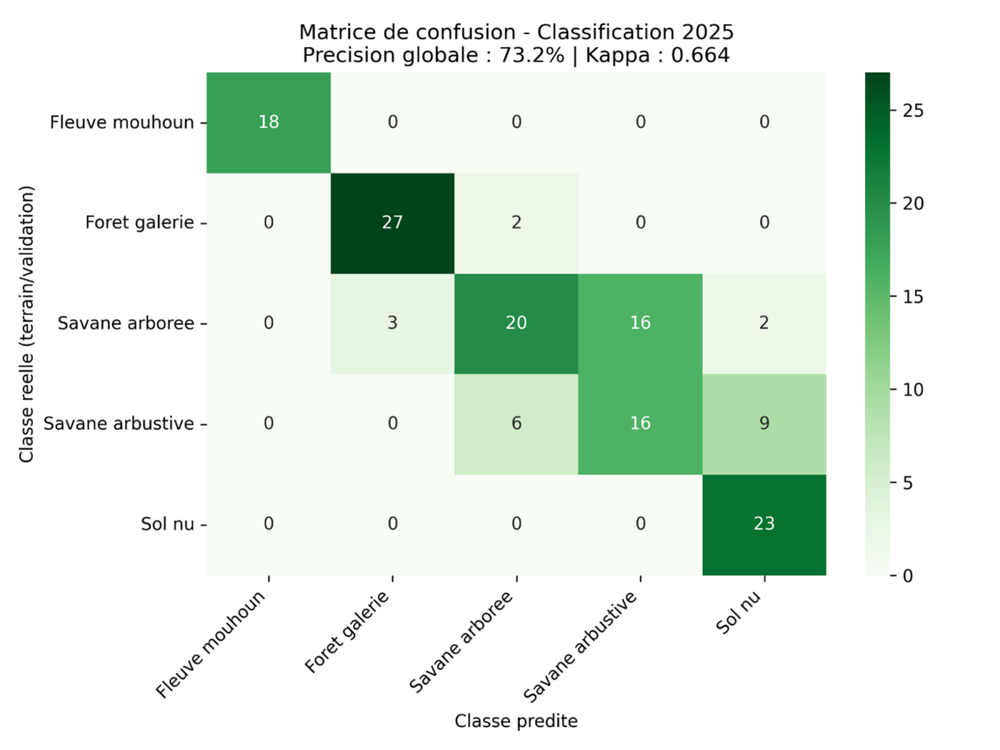
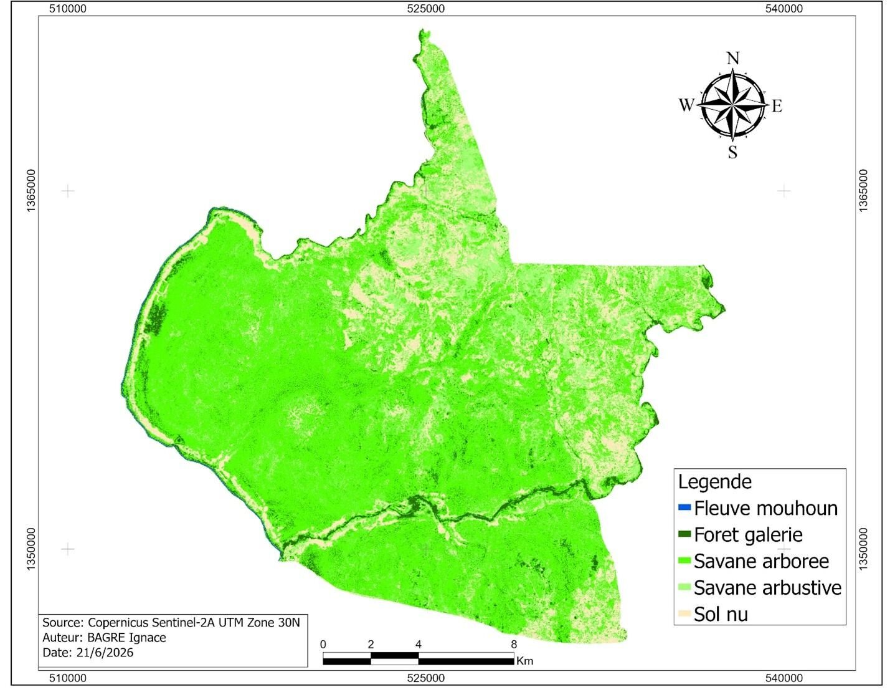
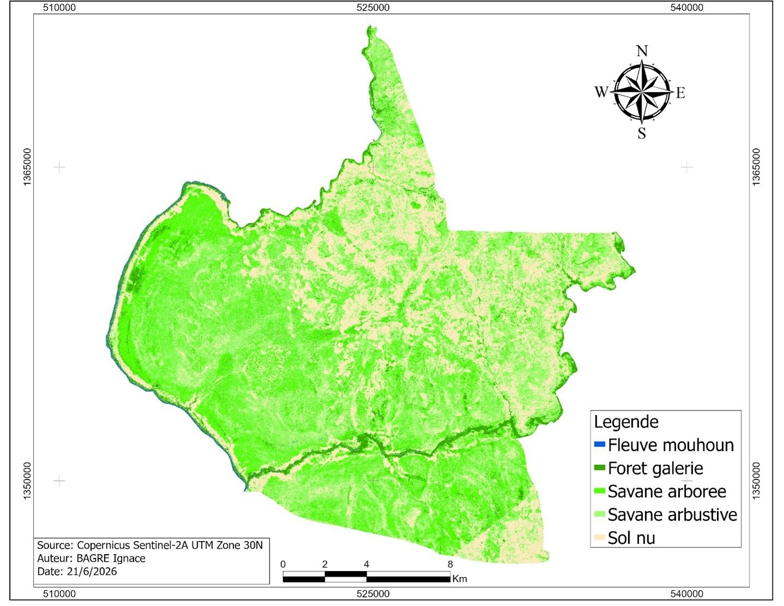
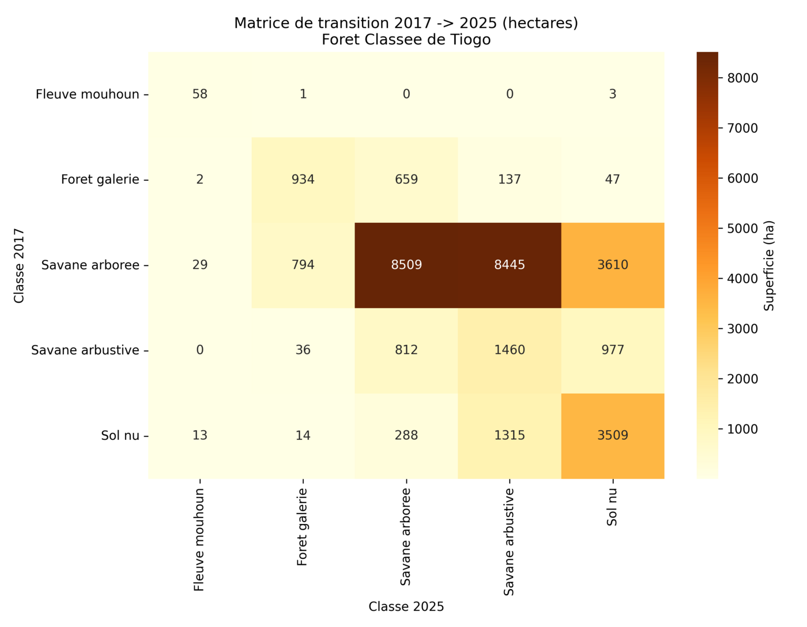
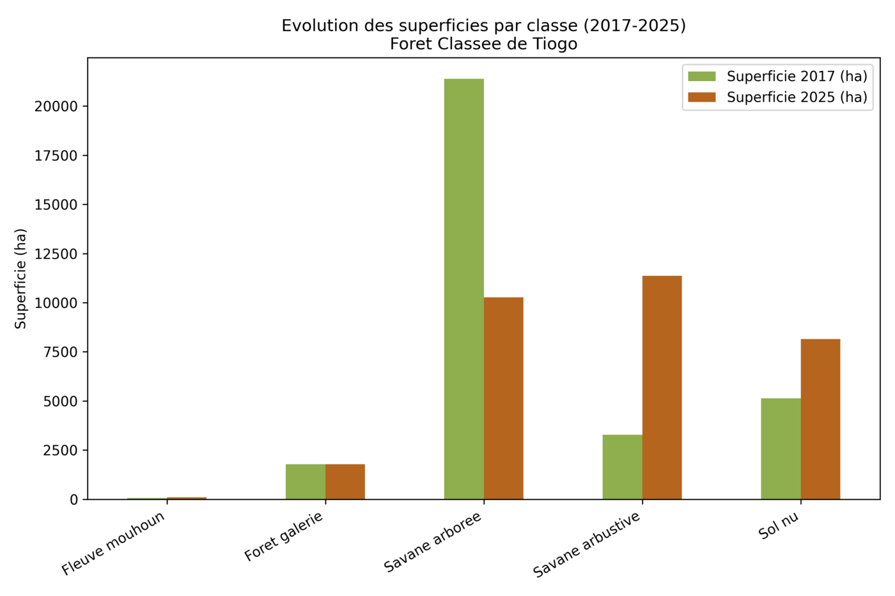

Classification supervisée KNN sur images Sentinel-2 (saison sèche, 2017 et 2025), avec validation par matrice de confusion et coefficient Kappa.
La Forêt Classée de Tiogo, dans la province du Sanguié, constitue l'une des principales forêts classées du Centre-Ouest du Burkina Faso. Malgré son statut de protection légale, elle subit des défrichements agricoles, l'exploitation du bois et, depuis les années 2010, une expansion rapide de l'orpaillage artisanal.
Les études antérieures (Coulibaly, 2018 ; Kaboré, 2020) documentaient une perte de 47 à 49 % des savanes arborées entre 1990 et 2019 — mais aucune n'intégrait la période récente 2017–2025, marquée par une intensification des pressions. Ce projet comble cette lacune temporelle et méthodologique.

Deux images Sentinel-2 (niveau L2A, réflectance de surface) ont été acquises en saison sèche pour limiter les biais phénologiques — 19 février 2017 et 12 février 2025, toutes deux avec une couverture nuageuse quasi nulle.
Resampling à 10 m, extraction de la zone d'étude par shapefile, masquage des nuages via la bande SCL.
Calcul du NDVI (végétation), NDWI (eau libre) et BSI (sols nus), empilés avec les bandes B2, B3, B4, B8, B11.
5 classes : forêt galerie, savane arborée, savane arbustive, sol nu, eau. ~250 polygones d'entraînement par date.
142 (2017) et 144 (2025) points de validation, matrice de confusion et coefficient Kappa via scikit-learn.
Comparaison pixel à pixel (rasterio), matrice de transition et taux de déforestation annuel (formule FAO).

La classification 2017 atteint une précision globale de 70,4 % (Kappa 0,617) ; celle de 2025, 73,2 % (Kappa 0,664) — un accord jugé « substantiel » selon l'échelle de Landis et Koch. La principale confusion se situe entre savane arborée et savane arbustive, deux strates spectralement proches en saison sèche.


En 2017, la savane arborée dominait avec 67,2 % de la superficie. En 2025, elle n'en représente plus que 32,4 %, dépassée par la savane arbustive (35,7 %) — signe d'une dégradation progressive plutôt que d'une déforestation brutale et directe.
Image Sentinel-2 de référence, classification KNN initiale.
Dégradation progressive : éclaircissement de la canopée avant conversion.
Savane arbustive devenue dominante (35,7 %).


Seuls 8 509 ha de savane arborée (39,8 % de sa superficie initiale) ont conservé leur statut entre 2017 et 2025. La majeure partie s'est dégradée vers la savane arbustive (8 445 ha) ou le sol nu (3 610 ha) — un éclaircissement progressif de la canopée avant conversion complète.


Le taux de −7,85 %/an est nettement supérieur aux tendances des décennies précédentes (moins de 2 %/an entre 1990 et 2019), suggérant une accélération récente de la déforestation — probablement liée à l'expansion agricole et à l'essor de l'orpaillage artisanal depuis 2012.
Un modèle CNN a déjà été entraîné sur EuroSAT (94,8 % de précision test) comme base de transfer learning. L'étape suivante consiste à adapter ce modèle — via un U-Net — aux 8 canaux utilisés dans ce projet (bandes Sentinel-2 + indices spectraux), puis à l'évaluer sur les mêmes points de validation que la classification KNN, pour une comparaison directe et rigoureuse entre les deux approches.
← Retour aux projets